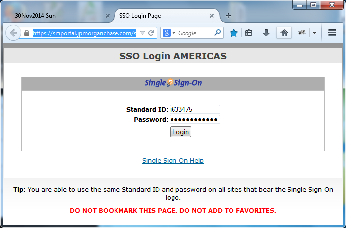
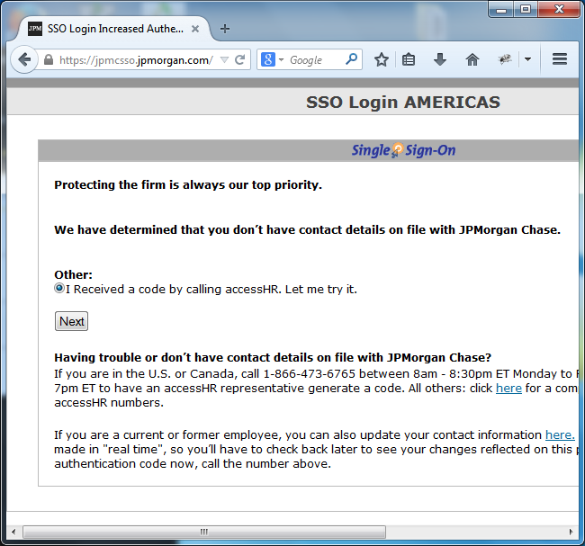
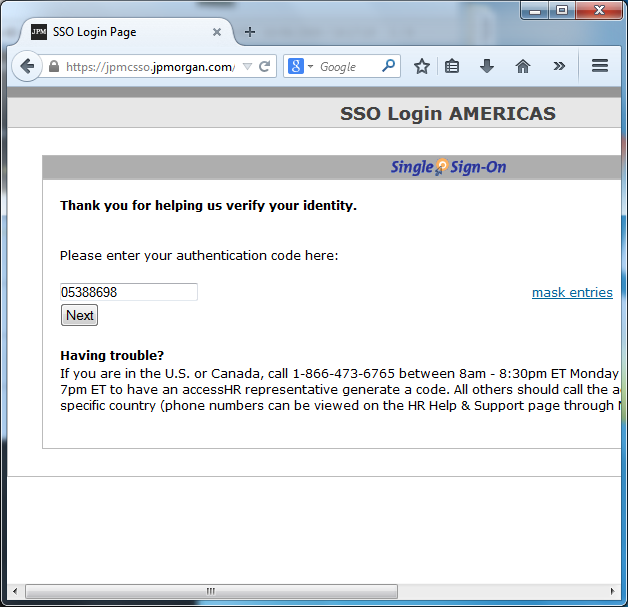
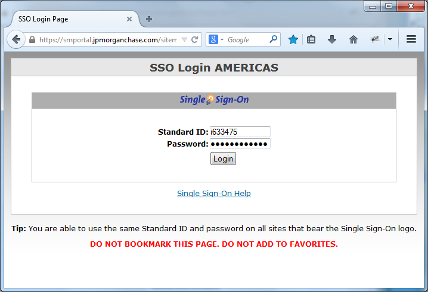
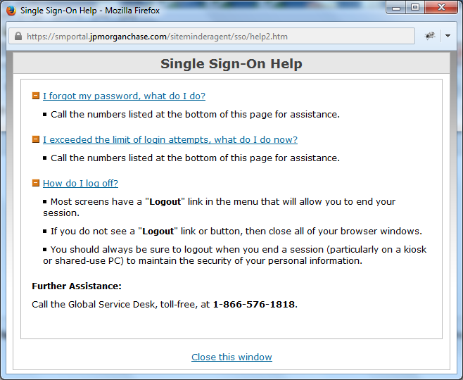
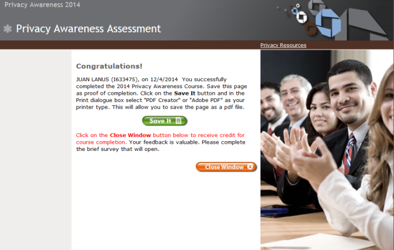
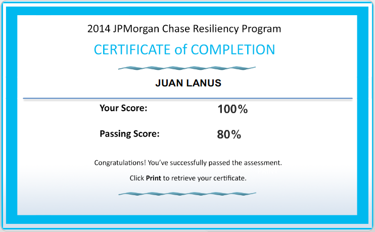

agenda 30Nov2014 Sun
PHP UK Conference 2013 - KEYNOTE | Aral Balkan - You Are A Designer
Course: TODFJHS14 Defensive Programming for Java Script & HTML 5 2014
M2014
gvimrc: set shortmess=aoOtI
PHP UK Conference 2013 - KEYNOTE | Aral Balkan - You Are A Designer
Course: TODFJHS14 Defensive Programming for Java Script & HTML 5 2014
M2014
gvimrc: set shortmess=aoOtI
Started with the SSO login page:

The network notices I'm new and asks me for an additional token:

I have the token (since a couple days ago):

It sends me back to the SSO again:

And again to the "Incorrect ID and/or Password" screen.
Help is not so helpful:

Completed December 4, 2014 2:55 pm with 90% score
Social Media Examples
• Micro-blogging sites (Facebook, Twitter, Google Plus, Weibo, WhatsApp)
• Forums (BankRate, Yahoo Finance)
• Blogs (Tumblr, Blogspot, Wordpress)
• Customer review web sites (Yelp, Tripadvisor, Google Places, Bankrate, Amazon)
• Photo and video sites (Flickr, Instagram, Pinterest, SnapChat, YouTube)
• Professional networking (LinkedIn)
• Virtual worlds (Second Life)
• Social games (Farmville, Cityville)
• Location-based mobile networks (Foursquare, Facebook Places, Yelp Check In)
• “Dating” Sites (Match, OKCupid)
• Internal JPMC social networking sites & applications (IntraConnect, JPMC blogs, instant messaging, Intranet comments)
• Online encyclopedias that allow users to interact online (Wikipedia, Sidewiki)
• Online focus groups/communities (Communispace)
• Resume boards that allow users to interact online (Monster, Glassdoor)
• Online Comments (ESPN Comments)
JUAN LANUS (I633475), on 12/4/2014 You successfully completed the 2014 Privacy Awareness Course.

